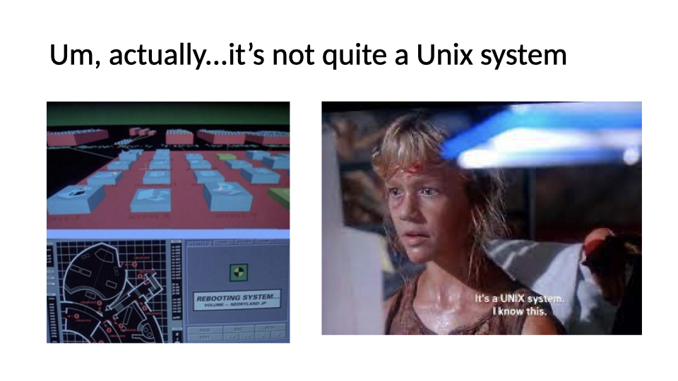
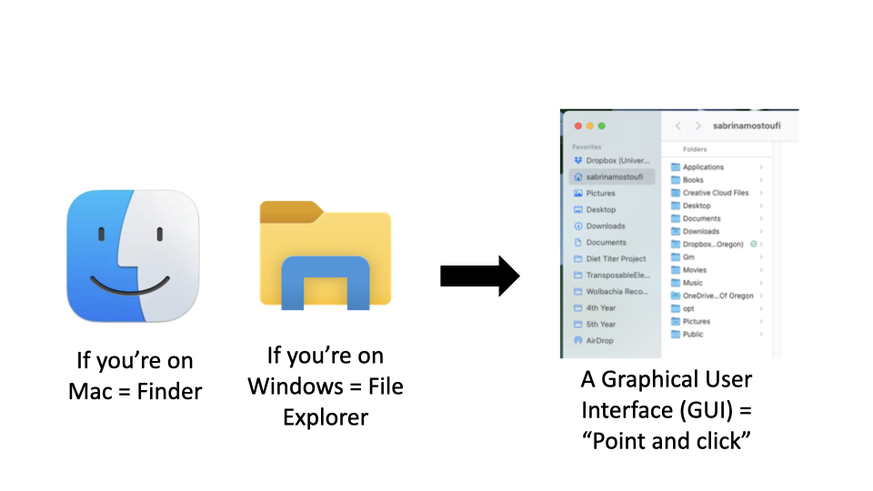
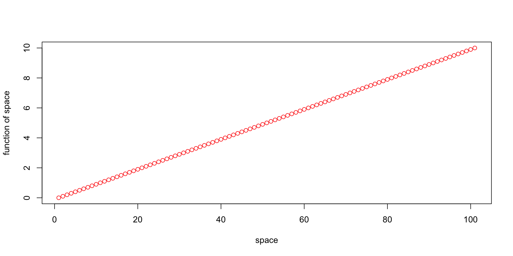
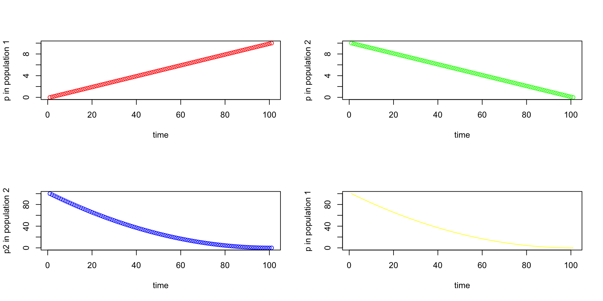

[1] 16Week 1b - Statistics for Bioengineering
Bill Cresko
What you will learn today
- Intro to Unix and the command line
- Scripting
- R & RStudio
- Markdown
On Tuesday
- Git and GitHub
- Exploratory Data Analysis (EDA)
Why do we need coding and scripting?
- It is incredibly fast and powerful, particularly for repeated actions
- It allows you to do thousands of ‘clicks’ with single commands
- Ability to analyze large datasets that Excel and other GUIs can’t handle well
- Access to thousands of free programs made for and by scientists
- The commands work almost identically across platforms
- Ability to use computer clusters like Talapas
What is the difference between coding and scripting?
codinggenerally involves computer languages that usecompilers- C^{++}, Fortran, etc
scriptinggenerally involves computer languages that areinterpretedon the fly- Python, R, Julia, etc.
- coding - faster but less flexible; scripting - flexible but slower
- The distinction between the two has become somewhat fuzzy and most modern analytical pipelines contain a combination of both
Why do we need statistics?
- We almost never know the world perfectly, but still want to draw conclusions or make decisions
- We need to estimate underlying parameters from samples of data
- Sometimes we need to test hypotheses using data
- Other times we need to more succinctly summarize and/or visualize large amounts of data
- There are well known mathematical rules that help us
- Statistics can be done by hand, but computers let us do most of the mathematics quickly
Why do we need statistics?
- We want to turn data into conclusions about the world
- point estimates and confidence intervals
- experimental design
- hypothesis testing
- data reduction of highly dimensional data
- We need a firm understanding of probability, sampling and distributions
Computational Tools - The Command Line

What is Unix?
- A scripting language developed in 1969, released in 1973
- Serves as the base language for many programs and computers
- Is the operating system for computers
- Linux is an open-source version of the same language
What is a shell?
The ‘shell’ is a program that runs UNIX and takes in commands and gives them to the operating system
Bash acts as the shell in macs, linux, and now windows
You can access the shell via a terminal window

Recipes for a shell command
- Prompt: notation used to indicate your computer is ready to accept a new command
- Command: the building blocks of programming, tell computer to do a specific task
- Options: change the behavior of a command
- Argument: what the command should operate on

Why use the shell?
- Speed
- Examine large and/or unique files
- Access super computers
- Use programs only available via shell
- The commands work almost identically across platforms
- You can even use them on a large computer cluster like Talapas
- It is incredibly powerful particularly for repeated actions
- It allows you to do thousands of ‘clicks’ with single commands
Where do you get help?
- Manual pages!
- The shell has manuals for all basic commands
- Type
man [command_name]to access the manual for a specific command - Type
qto exit
- Also…the internet!
Common navigation commands
Common navigation commands
The way you normally navigate
How is a computer organized?
- System of directories (folders) and files
- / = the root directory, which holds all other directories
- Most of your files will be located under /Users in a directory of your username
- the
~is shorthand for your home folder - Navigation in the shell consists of jumping up and down between directories and seeing what’s in them
- The “path” refers to the location a file is in
- ex: “/Users/wcresko/Documents”
Common navigation commands
pwd= “print working directory”, which will print where you currently are in the system- In Windows,
cdwill print your working directory
- In Windows,
ls= “list”, list all directories and files in your current positionls –F= denote which results are directories, files, etc.ls –l= ”long format”, lists total file sizesls –r= “reverse”, lists the results in reverse orderls –S= “size”, sort results by sizels –t= “time”, sort results by time created, from most recent to last
Common Navigation Commands
cd= “change directory”, will place you in a new position based on your path argumentcd ..= go up one directorycd –= go to the directory you were at last (like the back arrow on an internet browser)
Let’s practice!
- Try navigating around your computer using
cdandls - If you are on Ubuntu, you may need to create some empty directories in your Ubuntu folder before navigating in the terminal
Working with files
Making new files
- Make new folders:
mkdir - Make new files:
nano,touch - Rename files:
mv - Move files:
mv - Copy files:
cp - Delete files:
rm - Examining file length:
wc - Reading files:
cat - Looking at beginning or end:
headortail
Things to keep in mind
- The shell trusts you
- It will delete files you say to delete
- It will override files if you name 2 things the same
- Naming conventions
- Avoid spaces
- Don’t start with a –
- Stick to letters, numbers, . , -, and _
- Use appropriate file extensions in file names
- Some software expect files with certain extensions (.fasta, .txt, etc.)
Let’s try it out
- Make a new directory called whatever you’d like.
- Add a file named “Practice.txt” to the directory and add some text to it
- Read the contents of the file and get its length
- Rename the file to “Super_practice.txt”
- Move the file to a new folder named “Testing”
- Make a copy of the file named “Super_practice_copy.txt”
- Read the contents of the file and get its length to make sure it’s the same as Super_practice.txt
- Delete the original “Super_practice.txt”
Break
Tidy Data
An example to get us started

Data set rules of thumb (aka Tidy Data)
- Store a copy of data in nonproprietary software and hardware formats, such as plain ASCII text (aka a flat file)
- Leave an uncorrected file when doing analyses
- Use descriptive names for your data files and variables
- Include a header line with descriptive variable names
- Maintain effective metadata about the data
- When you add observations to a database, add rows
- When you add variables to a database, add columns, not rows
- A column of data should contain only one data type

Computational Tools - R and RStudio

Why use R?
- Good general scripting tool for statistics and mathematics
- Powerful and flexible and free
- Runs on all computer platforms
- New enhancements coming out all the time
- Superb data management & graphics capabilities
Why use R?
- Reproducibility - can keep your scripts to see exactly what was done
- You can write your own functions
- Lots of online help available
- Can use a nice GUI front end such as
Rstudio - Can embed your
Ranalyses in dynamic, polished files usingMarkdown - Markdown can be reused for websites, papers, books, presentations…
R scripts and Markdown files
- Often we want to write scripts that can just be run
- We can also embed code in Markdown files that provide more annotations
- https://quarto.org/docs/authoring/markdown-basics.html
- You can insert
RchunksintoQuarto markdowndocuments
Rscript basics
- A series of R commands that will be executed
- Can add comments using hashtags
# - Can have pipes (
|>) to connect one step to the next
Markdown basics
- a very simplified way for standard typesetting
- simple markdown can be rendered in numerous different ways
- Lists, codeblocks, images and more can all be inserted
Inserting equations in markdown
\[e=mc^2\]
\[\iint\limits_{a}^{b} f(x,y) \, dx \, dy\]
BASICS of R
- Commands can be submitted through the terminal, console or scripts
- In your scripts, anything that follows ‘#’ symbol (aka hash) is just for humans
- Notice on these slides I’m evaluating the code chunks and showing output
- The output is shown here after the two
#symbols and the number of output items is in[] - Also notice that
Rfollows the normal priority of mathematical evaluation
Assigning Variables
- A better way to do this is to assign variables
- Variables are assigned values using the
<-operator. - Variable names must begin with a letter, but other than that, just about anything goes.
- Do keep in mind that
Ris case sensitive.
Assigning Variables
These do not work
Arithmetic operations on functions
- Arithmetic operations can be performed easily on functions as well as numbers.
- Try the following, and then your own.
- Note that the last of these -
log- is a built in function ofR, and therefore the object of the function needs to be put in parentheses - These parentheses will be important, and we’ll come back to them later when we add arguments after the object in the parentheses
- The outcome of calculations can be assigned to new variables as well, and the results can be checked using the ‘print’ command
Arithmetic operations on functions
STRINGS
- Variables and operations can be performed on characters as well
- Note that characters need to be set off by quotation marks to differentiate them from numbers
- The
cstands forconcatenate - Note that we are using the same variable names as we did previously, which means that we’re overwriting our previous assignment
- A good rule of thumb is to use new names for each variable, and make them short but still descriptive
STRINGS
FACTORS
- The variable
zis now what is called a list of character values. - Sometimes we would like to treat the characters as if they were units for subsequent calculations.
- These are called
factors, and we can redefine our character variables as factors. - This might seem a bit strange, but it’s important for statistical analyses where we might want to see the mean or variance for two different treatments.
FACTORS
- Note that factor levels are reported alphabetically
VECTORS
- In general
Rthinks in terms of vectors (a list of characters, factors or numerical values) and it will benefit anyRuser to try to write programs with that in mind, as it will simplify most things. - Vectors can be assigned directly using the ‘c()’ function and then entering the exact values.
VECTORS
Basic Statistics
- Many functions exist to operate on vectors.
- Combine these with your previous variable to see what happens.
- Also, try to find other functions (e.g. standard deviation).
Basic Statistics
- Notice that the last function (
sample) has an argument (replace=T) - Arguments simply modify or direct the function in some way
- There are many arguments for each function, some of which are defaults
Getting Help
- Getting Help on any function is very easy - just type a question mark and the name of the function.
- There are functions for just about anything within
Rand it is easy enough to write your own functions if none already exist to do what you want to do. - In general, function calls have a simple structure: a function name, a set of parentheses and an optional set of parameters to send to the function.
- Help pages exist for all functions that, at a minimum, explain what parameters exist for the function.
- Help can be accessed a few ways - try them :
Getting Help
Creating vectors
- Creating vector of new data by entering it by hand can be a drag
- However, it is also very easy to use functions such as
seqandsample - Try the examples below Can you figure out what the three arguments in the parentheses mean?
- Try varying the arguments to see what happens.
- Don’t go too crazy with the last one or your computer might slow way down
Creating vectors
[1] 0.0 0.1 0.2 0.3 0.4 0.5 0.6 0.7 0.8 0.9 1.0 1.1 1.2 1.3 1.4
[16] 1.5 1.6 1.7 1.8 1.9 2.0 2.1 2.2 2.3 2.4 2.5 2.6 2.7 2.8 2.9
[31] 3.0 3.1 3.2 3.3 3.4 3.5 3.6 3.7 3.8 3.9 4.0 4.1 4.2 4.3 4.4
[46] 4.5 4.6 4.7 4.8 4.9 5.0 5.1 5.2 5.3 5.4 5.5 5.6 5.7 5.8 5.9
[61] 6.0 6.1 6.2 6.3 6.4 6.5 6.6 6.7 6.8 6.9 7.0 7.1 7.2 7.3 7.4
[76] 7.5 7.6 7.7 7.8 7.9 8.0 8.1 8.2 8.3 8.4 8.5 8.6 8.7 8.8 8.9
[91] 9.0 9.1 9.2 9.3 9.4 9.5 9.6 9.7 9.8 9.9 10.0 [1] 10.0 9.9 9.8 9.7 9.6 9.5 9.4 9.3 9.2 9.1 9.0 8.9 8.8 8.7 8.6
[16] 8.5 8.4 8.3 8.2 8.1 8.0 7.9 7.8 7.7 7.6 7.5 7.4 7.3 7.2 7.1
[31] 7.0 6.9 6.8 6.7 6.6 6.5 6.4 6.3 6.2 6.1 6.0 5.9 5.8 5.7 5.6
[46] 5.5 5.4 5.3 5.2 5.1 5.0 4.9 4.8 4.7 4.6 4.5 4.4 4.3 4.2 4.1
[61] 4.0 3.9 3.8 3.7 3.6 3.5 3.4 3.3 3.2 3.1 3.0 2.9 2.8 2.7 2.6
[76] 2.5 2.4 2.3 2.2 2.1 2.0 1.9 1.8 1.7 1.6 1.5 1.4 1.3 1.2 1.1
[91] 1.0 0.9 0.8 0.7 0.6 0.5 0.4 0.3 0.2 0.1 0.0Creating vectors
[1] 100.00 98.01 96.04 94.09 92.16 90.25 88.36 86.49 84.64 82.81
[11] 81.00 79.21 77.44 75.69 73.96 72.25 70.56 68.89 67.24 65.61
[21] 64.00 62.41 60.84 59.29 57.76 56.25 54.76 53.29 51.84 50.41
[31] 49.00 47.61 46.24 44.89 43.56 42.25 40.96 39.69 38.44 37.21
[41] 36.00 34.81 33.64 32.49 31.36 30.25 29.16 28.09 27.04 26.01
[51] 25.00 24.01 23.04 22.09 21.16 20.25 19.36 18.49 17.64 16.81
[61] 16.00 15.21 14.44 13.69 12.96 12.25 11.56 10.89 10.24 9.61
[71] 9.00 8.41 7.84 7.29 6.76 6.25 5.76 5.29 4.84 4.41
[81] 4.00 3.61 3.24 2.89 2.56 2.25 1.96 1.69 1.44 1.21
[91] 1.00 0.81 0.64 0.49 0.36 0.25 0.16 0.09 0.04 0.01
[101] 0.00Creating vectors
[1] 100.00 98.01 96.04 94.09 92.16 90.25 88.36 86.49 84.64 82.81
[11] 81.00 79.21 77.44 75.69 73.96 72.25 70.56 68.89 67.24 65.61
[21] 64.00 62.41 60.84 59.29 57.76 56.25 54.76 53.29 51.84 50.41
[31] 49.00 47.61 46.24 44.89 43.56 42.25 40.96 39.69 38.44 37.21
[41] 36.00 34.81 33.64 32.49 31.36 30.25 29.16 28.09 27.04 26.01
[51] 25.00 24.01 23.04 22.09 21.16 20.25 19.36 18.49 17.64 16.81
[61] 16.00 15.21 14.44 13.69 12.96 12.25 11.56 10.89 10.24 9.61
[71] 9.00 8.41 7.84 7.29 6.76 6.25 5.76 5.29 4.84 4.41
[81] 4.00 3.61 3.24 2.89 2.56 2.25 1.96 1.69 1.44 1.21
[91] 1.00 0.81 0.64 0.49 0.36 0.25 0.16 0.09 0.04 0.01
[101] 0.00Drawing samples from distributions
- Here is a way to create your own data sets that are random samples.
- Again, play around with the arguments in the parentheses to see what happens.
Drawing samples from distributions

Drawing samples from distributions

Drawing samples from distributions

Drawing samples from distributions
- You’ve probably figured out that y from the last example is drawing numbers with equal probability.
- What if you want to draw from a distribution?
- Again, play around with the arguments in the parentheses to see what happens.
Drawing samples from distributions
dnorm()generates the probability density, which can be plotted using thecurve()function.- Note that is curve is added to the plot using
add=TRUE
Visualizing Data
- So far you’ve been visualizing just the list of output numbers
- Except for the last example where I snuck in a
histfunction. - You can also visualize all of the variables that you’ve created using the
plotfunction (as well as a number of more sophisticated plotting functions). - Each of these is called a
high levelplotting function, which sets the stage Low levelplotting functions will tweak the plots and make them beautiful
Visualizing Data
- What do you think that each of the arguments means for the plot function?
- A cool thing about
Ris that the options for the arguments make sense. - Try adjusting an argument and see if it works
- Note next week we will be exploring the plotting in
GGPlot2
Visualizing Data
Putting plots in a single figure
- On the next slide
- The first line of the lower script tells R that you are going to create a composite figure that has two rows and two columns. Can you tell how?
- Now, modify the code to add two more variables and add one more row of two panels.
Putting plots in a single figure
par(mfrow=c(2,2))
plot (seq_1, xlab="time", ylab ="p in population 1", type = "p", col = 'red')
plot (seq_2, xlab="time", ylab ="p in population 2", type = "p", col = 'green')
plot (seq_square, xlab="time", ylab ="p2 in population 2", type = "p", col = 'blue')
plot (seq_square_new, xlab="time", ylab ="p in population 1", type = "l", col = 'yellow')
Example using binomial distribution
- As above for the normal distribution, data can be generated by being sampled from nearly any distribution and then visualized.
- Below I’m having you use the ‘histogram’ function. What does it do?
Example using binomial distribution
- 10 successes (out of 20 trials) is the most frequent outcome

Example using binomial distribution
- This kind of statement can be run in one line as well, which is sometimes easier.

Creating Data Frames in R
- As you have seen, in R you can generate your own random data set drawn from nearly any distribution very easily.
- Often we will want to use collected data.
- Now, let’s make a dummy dataset to get used to dealing with data frames
- Set up three variables (hydrogel_concentration, compression and conductivity) as vectors
- Create a data frame where vectors become columns
- Now you have a hand-made data frame with row names
- Take a look at it in the data section of RStudio
Reading in Data Frames in R
- A strength of
Ris being able to import data from an external source - Create the same table that you did above in a spreadsheet like Excel
- Export it to comma separated and tab separated text files for importing into
R. - The first will read in a comma-delimited file, whereas the second is a tab-delimited
- In both cases the header and row.names arguments indicate that there is a header row and row label column
- Note that the name of the file by itself will have R look in the CWD, whereas a full path can also be used
Reading in Data Frames in R
Exporting Data Frames in R
Indexing in data frames
- Next up - indexing just a subset of the data
- This is a very important idea in R, that you can analyze just a subset of the data.
- This is analyzing only the data in the file you made that has the factor value ‘mixed’.
Indexing in data frames
- You can perform operations on particular levels of a factor
- Calculating the mean of the ‘mixed’ and ‘gipps’ levels of habitat.
- Note that the first argument is the numerical column vector, and the second is the factor column vector.
- The third is the operation. Reversing the first two does not work (the one below).
R INTERLUDE | Some real transcriptomic data
- Examine the data file
- How many many rows and columns are there?
- How many different variables are there?
- What are the general types of variables?
- Now let’s read the data file into R and analyze it
- This exercise will help you get used to reading in and manipulating genomic data files
- First off, remember to set your working directory to find your file correctly
Some real transcriptomic data
Summary stats and figures
summary1 <- summary(RNAseq_Data $ENSGACG00000000003)
print (summary1)
hist(RNAseq_Data $ENSGACG00000000003)
boxplot(RNAseq_Data$ENSGACG00000000003)
boxplot(RNAseq_Data$ENSGACG00000000003~RNAseq_Data$Population)
plot(RNAseq_Data $ENSGACG00000000003, RNAseq_Data$ENSGACG00000000003)
boxplot(RNAseq_Data $ENSGACG00000000003~RNAseq_Data$Treatment,
col = "red", ylab = "Expression Level", xlab = "Treatment level",
border ="orange",
main = "Boxplot of variation in gene expression across microbiota treatments")BioE_Stats_2025 - Knight Campus